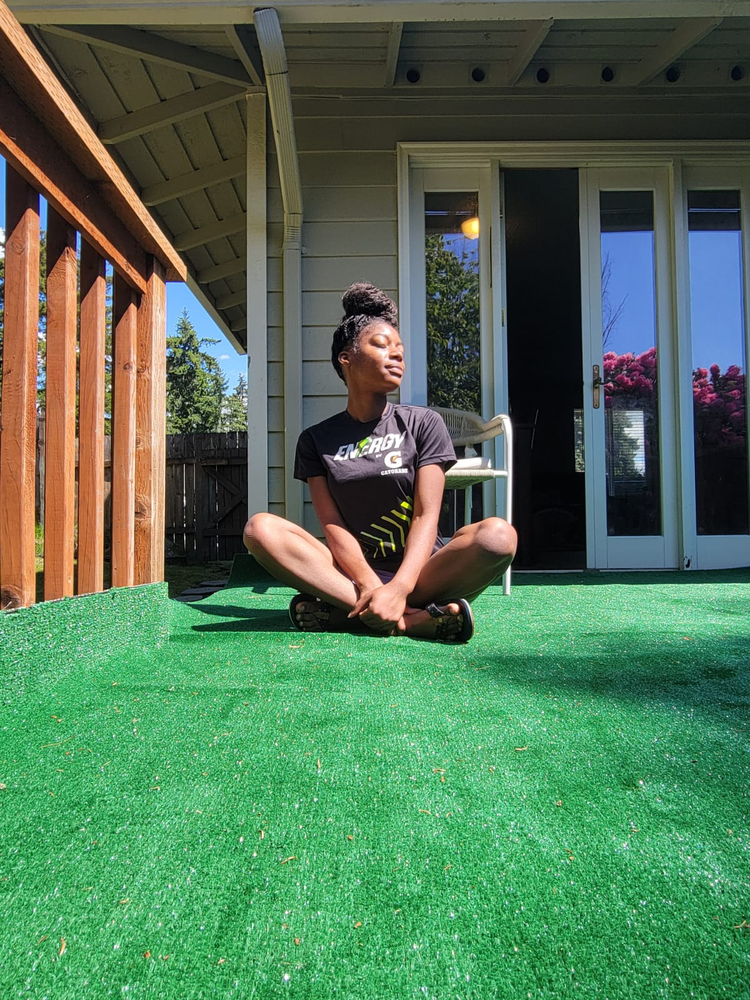

My Journey Into Self Wellness

My wellness journey has been a transformative experience that taught me the importance of balance, self-care, and perseverance. Over the past few years, I’ve focused on maintaining a healthy lifestyle through proper nutrition, regular exercise, and mindfulness practices. I discovered that small daily habits, like taking short walks, drinking plenty of water, and setting aside time for meditation, can have a profound impact on both my physical and mental health. This journey has not only improved my energy levels and overall well-being but has also strengthened my mental resilience, allowing me to approach challenges with a positive mindset and a greater sense of clarity.
Alongside physical wellness, I’ve learned the importance of emotional and social well-being. Engaging with supportive friends and family, journaling my thoughts, and celebrating small accomplishments have all been vital components of this journey. By integrating wellness into my lifestyle, I find myself more motivated and focused in every area of life, including my passion for web development. Each day becomes an opportunity to grow, learn, and build both healthier habits and creative skills that will benefit me long-term.